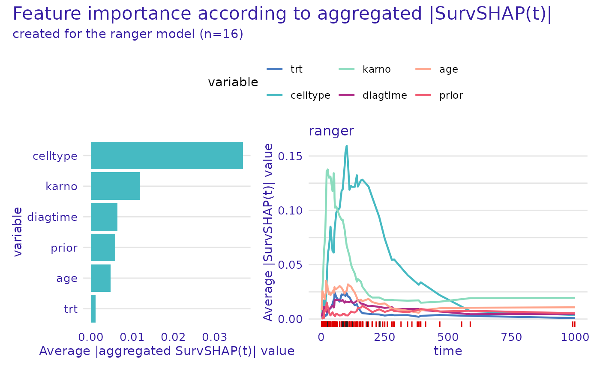
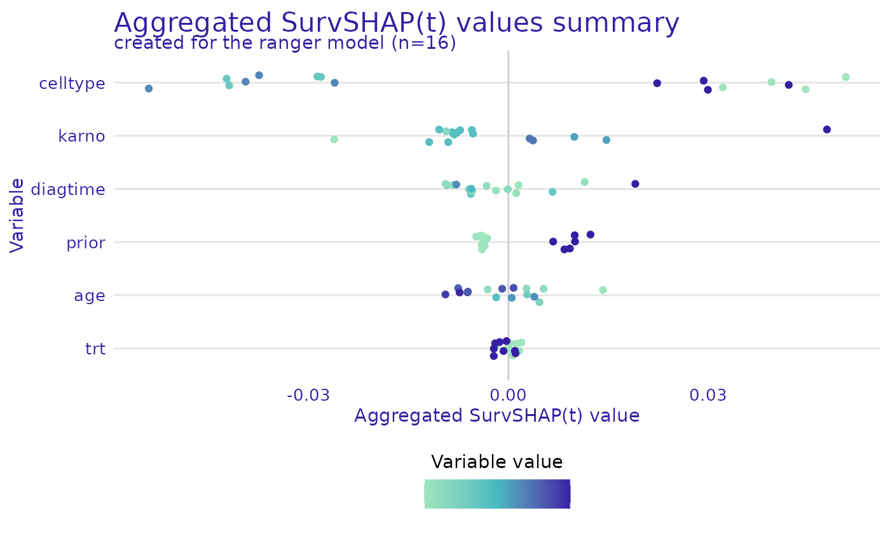
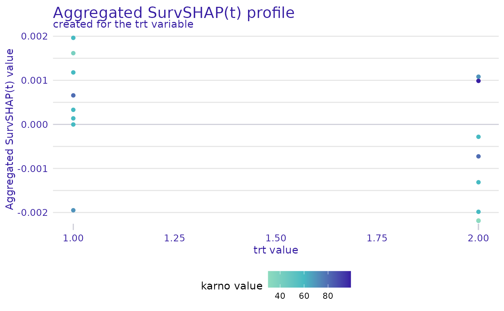

This function computes global SHAP values.
model_survshap(explainer, ...)
# S3 method for surv_explainer
model_survshap(
explainer,
new_observation = NULL,
y_true = NULL,
N = NULL,
calculation_method = "kernelshap",
aggregation_method = "integral",
output_type = "survival",
...
)an explainer object - model preprocessed by the explain() function
additional parameters, passed to internal functions
new observations for which predictions need to be explained
a two element numeric vector or matrix of one row and two columns, the first element being the true observed time and the second the status of the observation, used for plotting
a positive integer, number of observations used as the background data
a character, either "kernelshap" for use of kernelshap library (providing faster Kernel SHAP with refinements), "exact_kernel" for exact Kernel SHAP estimation, or "treeshap" for use of treeshap library (efficient implementation to compute SHAP values for tree-based models).
a character, either "integral", "integral_absolute", "mean_absolute", "max_absolute", or "sum_of_squares"
a character, either "survival" or "chf". Determines which type of prediction should be used for explanations.
An object of class aggregated_surv_shap containing the computed global SHAP values.
If specifying y_true, also new_observation must be specified.
Using the argument new_observation, global SHAP values are computed for the provided data. Otherwise,
global SHAP values are computed for the data, the explainer was trained with.
# \donttest{
veteran <- survival::veteran
rsf_ranger <- ranger::ranger(
survival::Surv(time, status) ~ .,
data = veteran,
respect.unordered.factors = TRUE,
num.trees = 100,
mtry = 3,
max.depth = 5
)
rsf_ranger_exp <- explain(
rsf_ranger,
data = veteran[, -c(3, 4)],
y = survival::Surv(veteran$time, veteran$status),
verbose = FALSE
)
ranger_global_survshap <- model_survshap(
explainer = rsf_ranger_exp,
new_observation = veteran[
c(1:4, 17:20, 110:113, 126:129),
!colnames(veteran) %in% c("time", "status")
],
y_true = survival::Surv(
veteran$time[c(1:4, 17:20, 110:113, 126:129)],
veteran$status[c(1:4, 17:20, 110:113, 126:129)]
),
aggregation_method = "integral",
calculation_method = "kernelshap",
)
plot(ranger_global_survshap)

plot(ranger_global_survshap, geom = "beeswarm")

plot(ranger_global_survshap, geom = "profile", color_variable = "karno")
#> Warning: `variable` was not specified, the first from the result will be used.

# }